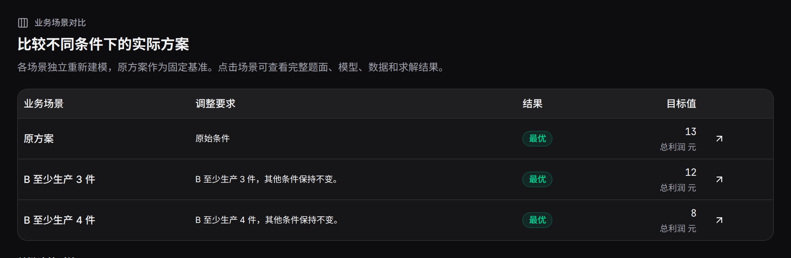

业务场景对比从一份方案出发，分别计算多个明确条件。它适合比较不同需求、预算、产能、人员可用性或供应变化。
建立一组场景#
在结果下方点击“业务场景对比”，填写2至6个场景的名称和变化。名称用于辨认结果，变化写入新题面。点击“计算并对比”后，各场景使用共同输入与原配置运行。
场景一：常规订单，B至少生产3件。
场景二：增加B订单，B至少生产4件。
也可在方案对话中一次提出多个场景，完成后打开“对比本轮方案”。
共同基准怎样分支#

Mermaid 源码
flowchart TB
Base["固定原方案：利润13"] --> First["场景一：B至少3件"]
Base --> Second["场景二：B至少4件"]
First --> SolveOne["独立建模与求解：利润12"]
Second --> SolveTwo["独立建模与求解：利润8"]
SolveOne --> Compare["与原方案并排比较"]
SolveTwo --> Compare
Base --> Compare
每个场景保存自己的完整题面、代码、求解与结果。场景对话保留原来的当前基准，后续可明确选择某个场景继续调整。
一个完整比较表#
| 方案 | A | B | 利润 |
|---|---|---|---|
| 原方案 | 3 | 2 | 13 |
| B至少3件 | 2 | 3 | 12 |
| B至少4件 | 0 | 4 | 8 |

先看场景状态和目标，再看发生变化的变量。对比页优先展示前20个变化的同名变量，点击单个运行可以查看完整结果和输入。
试着生成并选择场景#
点击“比较 B ≥ 3 与 B ≥ 4”生成两个场景，再点击下方保存的“B ≥ 4”方案。顶部当前讨论方案随之更新；点击“查看资源使用”，会读取所选场景的产量与工时。
从 A = 3、B = 2、利润 13 元的生产方案开始。点击一条消息执行操作，再从已保存方案中选择后续讨论的基准。
当前讨论方案原方案 · 利润 13 元
选择已保存方案
固定教学案例，数值在浏览器中即时计算。
怎样组织有用的场景#
| 业务问题 | 可以设置的变化 |
|---|---|
| 需求增长 | 分别提高各产品或门店需求 |
| 人员缺席 | 固定某员工某天不可用 |
| 预算协商 | 不同总预算上限 |
| 设备维护 | 降低指定日期产能 |
| 供应波动 | 改变某仓库供给或禁用路线 |
为每个场景写完整的对象与取值；保留一致的目标含义和单位，便于读表。需要连续累积的变更，可逐次使用调整条件。
录屏与结果归档#
录屏中间展示场景填写和对比表。每个场景都有独立链接，可导出 Excel、添加标签并记录结论。
查看字幕文字
- 填写生产需求，开始自动建模。
- 查看实际方案：A 为 3，B 为 2，总利润 13。
- 输入两个业务场景：B 至少 3 件，以及 B 至少 4 件。
- 同一基准下对比：原方案利润 13，两个场景分别为 12 和 8。
- 打开附件，检查字段和数据。
- 修改 A 的单件利润并保存到需求稿。